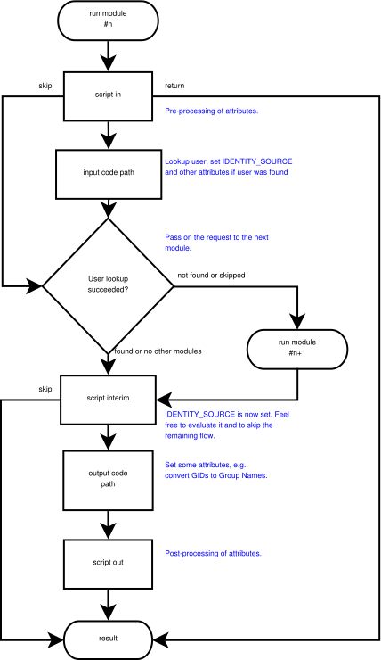

MAVIS ‐ Modular Attribute-Value Interchange System
Marc Huber
$Id: feea0b989df93a0f03a07220becab84ba21b4c88 $- Table of Contents
- 1. Introduction
-
- 1.1. Download
- 2. Design overview
- 3. Authentication setups
- 4. Sample setups
- 5. Configuration Syntax
-
- 5.1. Standard Configuration Directives
- 5.2. Backend Module Configuration
-
- 5.2.1. The anonftp module
- 5.2.2. The asciiftp module
- 5.2.3. The auth module
- 5.2.4. The cache module
- 5.2.5. The external module
- 5.2.6. The external-mt module
- 5.2.7. The group module
- 5.2.8. The limit module
- 5.2.9. The log module
- 5.2.10. The PAM module
- 5.2.11. The remote module
- 5.2.12. The tacinfo_cache module
- 5.2.13. The system module
- 5.2.14. The userdb module
- 5.2.15. The tee module
- 5.2.16. The null module
- 5.3. MAVIS Scripting Language
- 6. Testing your MAVIS configuration
- 7. Environmental Variables
- 8. Copyrights and Acknowledgements
1. Introduction
The MAVIS libraries provide a modular and extensible protocol for authorization and authentication tasks. Authorization/authentication modules are stackable and configurable. Both synchronous and asynchronous operation modes are available.
The modules are reentrant, but not thread-save.
1.1. Download
You can download the source code from the GitHub repository at https://github.com/MarcJHuber/event-driven-servers/. Documentation is available on the original site, https://www.pro-bono-publico.de/projects/, too.
2. Design overview
The MAVIS system consists of the MAVIS library (libmavis.so) and various MAVIS modules (libmavis_*.so). The library glues the modules together, sends requests to and receives answers from the modules. A module may answer (or modify) a request or pass it on to the module loaded later. It may intercept and modify the response from that module.
Example: Consider the following set-up:
An incoming request, e.g. for FTP authentication, first reaches the log module, which simply passes it on to the limit module. The limit module checks the IP address of the client and rejects the request if that address is blacklisted. Otherwise, the request is passed on to the auth module, which leaves it alone and passes it on to the cache module. If the request is not cached within the cache module it is passed on to the pam module, which sets some attribute-value pairs and sends the request back to the cache module. The cache module in turn adds the request data to its cache database and passes it back the auth module for authentication checking. [Remaining steps omitted.]
--. .-->
| |
.===|===<log>==============================================|===.
| | log -----' |
| | request <----. |
>===|===<limit>============================================|===<
| '--> client IP ------(YES)------> reject ----------->| |
| .--- blacklisted? .---> request | |
| | | | |
| (NO) (YES)-- add IP to --(NO)--' |
| | blacklist? <-------. |
>===|===<auth>=============================================|===<
| | verify -----' |
| | authentication <----. |
>===|===<cache>============================================|===<
| '--> answer for request ---(YES)---> answer request -->| |
| .--- already cached? | |
| | | |
| (NO) cache -----' |
| | request <----. |
>===|===<pam>==============================================|===<
| '--> retrieve authentication information from ---------' |
| PAM sub-system and system files |
'--------------------------------------------------------------'
3. Authentication setups
Some MAVIS modules have both synchronous and asynchronous operation modes. For low and medium performance applications it's sufficient to have one authentication daemon processing all incoming requests, with all the MAVIS modules utilized by mavisd operating synchronously. However, this introduces a serialization of all queries, causing requests that could immediately be answered by e.g. the limit or cache module to be deferred until database queries got processed. One possible solution to remedy this is to add one or more secondary authentication daemon for asynchronous processing of queries for synchronous-only modules. The remote module automatically distributes queries between the configured MAVIS daemons.
4. Sample setups
-
Stand alone setup: Authentication requests are processed synchronously. Only recommended for low-latency modules where no common database is required, e.g. the anonftp module.
.-----------. .-----------. | .-----------. |-| | Client |-| | |-----------| | | | [ log ] | |-' | [ ... ] |-' `-----------' -
Remote authentication setup: Authentication request processing is done asynchronous by mavisd. Recommended for medium-latency modules or modules that require access to shared data, e.g. the limit or cache module.
.------------. .-----------. .------------. |<===>| mavisd | .------------. |<=====>|-----------| | Client |<=======>| [ log ] | |------------| |-' | [ limit ] | | [ remote ] |-' | [ auth ] | `------------' | [ cache ] | | [ ... ] | `-----------' -
Remote authentication setup with redundancy: Recommended for high-latency modules that are only capable of synchronous request processing, high- performance setups or where redundancy is desired, e.g. suitable for database access modules.
.------------. .------------. .-----------. .------------. |<===>| mavisd |<=======>| mavisd | .------------. |<=====>|------------| .-----------.-| | Client |<=======>| [ log ] |<=====>| mavisd | | |------------| |-' | [ limit ] | |-----------| | | [ remote ] |-' | [ auth ] | | [ log ] |-' `------------' | [ cache ] | | [ ... ] | | [ remote ] | | [ ... ] | `------------' `-----------'
5. Configuration Syntax
MAVIS modules are configured within the context of the application utilizing them. There's no special configuration file required or even supported.
Railroad diagram: MavisDecl
5.1. Standard Configuration Directives
Top-level configuration directives common to all of the applications using the MAVIS interface are:
-
include = config
Evaluates configuration file config.
-
id = ID{ ... }
Defines a configuration section ID, which will be evaluated by a matching server process.
Standard configuration directives which may be used both at top-level and inside the ID sections are:
-
alias = name { ... }
Defines an alias for the configuration directives inside the curly brackets.
-
debug = Level ...
Level can be either a integer value or a sequence of debugging keywords, each of which may, optionally, start with + or -, where + will enable debugging, and - will disable it. Supported keywords and their corresponding integer values are:
PARSE 1 AUTHOR 2 AUTHEN 4 ACCT 8 CONFIG 16 PACKET 32 HEX 64 LOCK 128 REGEX 256 ACL 512 RADIUS 1024 CMD 2049 BUFFER 4096 PROC 8192 NET 16384 PATH 32768 CONTROL 65536 INDEX 131072 AV 262144 MAVIS 524288 Not all of these debugging flags may have an actual effect. The flags are additive; use the special flag NONE to clear all flags, use ALL to set all flags.
Debugging options may only be available when the package was configured with the --debug command line switch.
Example:
debug = ALL -PARSE -NET
-
regex-match-case = ( yes | no )
Enables/disables case-sensitive regex pattern matching for the current context. Default: no.
-
syslog ident = Ident
Set the syslog(3) identity. Defaults to the programs basename.
-
syslog severity = Level
Set the syslog(3) severity. Default: INFO.
-
syslog facility = Facility
Set the syslog(3) facility. Default: UUCP.
-
syslog default = ( permit | deny )
Enables or disables implicit logging to syslog(3) (if supported). Default is permit.
Standard configuration directives which may be used inside the ID section of MAVIS enabled applications are:
-
mavis path = Path
Add Path to the module search path.
-
mavis module ( identitySourceName ) = ModuleName { ... }
This directive searchs for module ModuleName in the compiled-in and configured search paths. Alternatively to auto-search, ModuleName may be an absolute path to a MAVIS module. The module will be loaded and will parse the configuration data inside the curly brackets.
identitySourceName is an optional parameter to provide better visibility of the source (the originating MAVIS module) of an identity. It will be assigned to the MAVIS IDENTITY_SOURCE attribute.
An actual configuration could look similar to:
syslog severity = INFO
syslog facility = DAEMON
id = spawnd {
listen = { port = 21 }
debug = NET
background = no
spawn = { exec = /usr/local/libexec/ftpd }
}
id = ftpd {
debug = ACL AUTHEN
mavis path = /some/none/default/location
mavis module = tee {
path in = /tmp/av.in
path out = /tmp/av.out
}
mavis module = log {
}
mavis module = anonftp {
userid = 100
groupid = mail
home = /
root = /tmp/
incoming = /tmp/incoming/
}
acl testacl {
src = 127.0.0.1
}
# lots of stuff missing here ...
}5.2. Backend Module Configuration
Generic configuration options for modules:
-
action ( error | not-found ) = ( continue | reject )
A module typically either acknowledges an request (user found/authenticated), rejects it (bad passsword) or handles the request on to the next module (the "user not found" case). This directives allows for overriding that verdict. Defaults are:
action error = reject # reject request action not-found = continue # continue with next MAVIS module, if any
The following modules are included in the distribution.
5.2.1. The anonftp module
This module implements anonymous FTP authentication. If the cache module is to be used, it has to be loaded after the anonftp module, because the cache module will only cache FTP type queries compatible with the auth module, and queries answered by the anonftp module aren't.
5.2.1.1. Configuration directives
The following configuration directives are mandatory, unless a ftp user exists in the local password database, in which case that information may be gathered from there:
-
userid = UserID
-
groupid = GroupID
-
root = RootDirectory
-
home = HomeDirectory
Optional directives are:
-
upload = UploadPathRegex
By default, anonymous FTP uploads are denied. The upload directive specifies a POSIX regular expression where uploads are permitted.
5.2.2. The asciiftp module
This module implements FTP authentication via an ASCII file.
5.2.2.1. Configuration directives
-
file = path
Authentication data is read from path. The generic syntax for individual configuration file lines is:
user:password:uid:gids:type:root:home[:certsubj]
Example file:
customer1:whatever:10000:10001:anon:/home/customers/customer1:/ customer2:whatever:10000:10002:anon:/home/customers/customer2:/:/C=DE/ST=... admin:whatever:10000:10001,10002:real:/home/customers:/admin
This configuration directive is mandatory.
-
userid ( min | max ) UserID
This directive specifies upper and lower UID limits.
-
groupid ( min | max ) GroupID
This directive specifies upper and lower GID limits.
5.2.3. The auth module
This module implements the server side of plain text and certificate based authentication schemes.
The auth module is mandatory for most authentication to work. It needs to be loaded before any caching or database access module, and it won't work over remote links unless mavisd is configured with "transmit-password yes". The anonftp and, depending on the backend, the external module are the only ones that doesn't require this module to be loaded.
5.2.3.1. Configuration Syntax
The only configuration option available is
-
authentication-mode = cert [ sufficient | required ]
This option may be used when authentication via digital certificates (currently supported by the system module) is used. If the sufficient keyword is used, no additional password authentication is necessary. The required keyword makes certificate authentication mandatory
5.2.4. The cache module
Please note that this module doesn't support tac_plus/tac_plus-ng. These do their own caching.
This module stores the most recently answered queries in RAM for faster processing of subsequent queries for the same data. For most applications, it has to be loaded after the auth module.
5.2.4.1. Configuration directives
Available configuration directives are:
-
expire [ Type ] = Seconds
Specifies the caching period for requests of type Type (or of all requests, if no type is given). No caching will be performed unless this directive is given. Valid values for Type are: FTP, TACPLUS.
Example:
# cache everything 100 seconds by default: expire = 100 # Don't cache FTP requests: cache expire FTP = 0
-
purge-outdated = Seconds
Periodically, outdated entries have to be removed from the cache. By default, this happens every 300 seconds, but you may specify a different garbage collection interval.
5.2.5. The external module
This module implements an interface to external authentication programs. An authentication program is expected to read a list of attribute-value pairs on stdin, and write the processed list (plus a result code) to stdout. The programs stderr output will be logged to syslogd.
Sample authentication backends for the external module include various Perl scripts, e.g. for RADIUS and LDAP authentication (see the mavis/perl/ directory), plus C backends. The latter are radmavis (for RADIUS authentication) and pammavis (for PAM authentication, as an alternative to the PAM module). While those may not be as flexible and easily to modify as the Perl scripts, they carry far fewer dependencies, and quite a lot of the usual attribute modifications can be performed using scripts; see the Scripting section below.
Using the external module to interface to external authenticators is probably in most cases favourable to writing custom modules, as external authentication programs may be implemented as easy-to-deploy Perl programs. Plus, you're likely to get get parallelism for free.
5.2.5.1. Configuration directives
The following configuration directives are available:
-
userid = UserID
Set user id of child process to UserID.
-
groupid = GroupID
Set group id of child process to GroupID.
-
home = Directory
Change to Directory before executing child process.
-
childs ( min | max ) = Number
Set the minimum or maximum number of child processes (defaults: 4, 20).
-
setenv Variable = Value
Set environment variables.
-
exec = Path Arguments ...
Set path and arguments (including argv[0]) of the authentication program. It's recommended to enclose the individual arguments in double quotes to avoid potential conflicts with pre-defined keywords.
5.2.6. The external-mt module
Just like the external module the external-mt module implements an interface to external authentication backends. However, external-mt expects a multi-threaded backend which is capable of processing concurrent authentications. Backends for radmavis-mt are pammavis-mt (PAM), radmavis-mt (RADIUS) and ldapmavis-mt (LDAP).
Using external-mt primarily makes sense for blocking backends, in particular if the latter would wait for interaction on a secondary channel, e.g. for a push notification validation.
mavis module = external-mt {
# -s specifies the service, which defaults to "mavis"
exec = /usr/local/sbin/pammavis-mt "pammavis-mt" "-s" "pamservicename"
}
5.2.6.1. Configuration directives
The following configuration directives are available:
-
setenv Variable = Value
Set environment variables.
-
exec = Path Arguments ...
Set path and arguments (including argv[0]) of the authentication program. It's recommended to enclose the individual arguments in double quotes to avoid potential conflicts with pre-defined keywords.
5.2.7. The group module
This module resolves numerical group IDs returned by a downstream backend to their corresponding ASCII names.
In addition, it allows for filtering group and memberOf attributes.
5.2.7.1. Configuration directives
The following configuration directives are available:
-
resolve gid = ( yes | no )
This tells the module to resolve the primary group id.
-
resolve gid attribute = attribute
Put the resolved group id to attribute instead of GID. Example:
resolve gids attribute = TACMEMBER
-
resolve gids = ( yes | no )
This tells the module to resolve the group access list.
-
resolve gids attribute = attribute
Put the resolved group ids to attribute instead of GIDS. Example:
resolve gids attribute = TACMEMBER
-
gid filter = [ not ] gid_start[-gid_end][,gid_start[-gid_end]]*
Establishes a filter on the GID MAVIS attribute. Example:
gid filter = 100,1000-1050
-
gids filter = [ not ] gid_start[-gid_end][,gid_start[-gid_end]]*
Establishes a filter on the GIDS MAVIS attribute. Example:
gid filter = 100,1000-1050
-
group filter = [ not ] regex[,regex]*
Establishes a filter on the GID MAVIS attribute after name resolving. Example:
group filter = /^com/
-
groups filter = [ not ] regex[,regex]*
Establishes a filter on the GIDS and TACMEMBERMAVIS attributes (for GIDS: after name resolving). Example:
groups filter = /^com/
-
memberof filter = [ not ] regex[,regex]*
Establishes a filter on the MEMBEROF MAVIS attribute after name resolving. Example:
memberof filter = /(?i)^cn=ops,dc=/
(regex syntax in these examples is PCRE, but standard POSIX will work, too.)
5.2.8. The limit module
This module implements limitations on the number of failed authentications per IP address.
5.2.8.1. Configuration directives
Available configuration directives are:
-
blacklist time = Seconds
blacklist count = Count
This limits the number of failed authentication requests per client IP address to Count per Seconds interval. Subsequent requests from the same client IP address will be rejected. This is disabled by default.
-
purge-outdated = Seconds
Periodically, the module will start a garbage collection run in order to remove outdated data from its internal data structures. This directive sets the garbage-collection period to Seconds (default: 300).
5.2.9. The log module
This module performs query logging to syslogd. There are no configuration options.
5.2.10. The PAM module
This module implements an interface for FTP authentication via pluggable authentication modules (PAM). The PAM module doesn't support asynchronous operation; you might be better off using the external module in conjunction with the pammavis program, giving you parallelism and a lot more flexibility for free.
PAMs that perform queries other than the standard username/password aren't supported.
Please take care not to use PAM modules with login delays enabled. E.g., for the pam_unix module, configure your PAM subsystem to use the nodelay (or whatever it's called in your setup) option, e.g. in /etc/pam.conf:
mavis required pam_unix.so nodelay
or in /etc/pam.d/mavis (or whatever service you've specified, see below):
auth required pam_unix.so nodelay account required pam_unix.so password required pam_unix.so session required pam_unix.so
On MacOS, the following should work:
auth required pam_opendirectory.so account required pam_opendirectory.so password required pam_opendirectory.so session required pam_opendirectory.so
| Pluggable Authentiation Modules | |
|---|---|
|
Configuring PAM correctly is pretty system specific. Do not assume that one of the examples above will work on your box. Have a look at your existing PAM configurations instead, and read the documentation that comes with your system. |
Programs utilizing this module may have to run under the user id of root if access to the shadow password file is required.
5.2.10.1. Configuration directives
Available configuration options are:
-
chroot = ( yes | no )
This activates a chroot environment for PAM users (default: yes). The chroot root directory is either the users' home directory or, if the home directory path contains a /./ sequence, the directory denoted by the path up to that sequence.
-
service = Service
This specifies the service name to use for PAM initialization. It defaults to mavis.
5.2.11. The remote module
This module implements communication with mavisd.
5.2.11.1. Configuration directives
Available configuration options are:
-
local address = IPAddress
Set address for outgoing IP connections.
-
rebalance = Count
Re-balances peers after Count requests. May be used to reactivate dead peers. Use with care.
Default: unset.
-
server = { ... }
Specifies a server mavisd runs on. Inside the curly brackets, the following directives are permitted:
-
path = UnixPath
-
address = IPAddress
-
port = UDPPort
-
blowfish key = Key
-
blowfish keyfile = KeyFile
These set remote connection endpoint and blowfish key. This directive may be used multiple times. Communication will be Blowfish encrypted if a key is specified.
Communication via PF_UNIX sockets may only work if the host system supports anonymous binds for that protocol family. This works on Linux, which supports an abstract namespace which is independent of the file system, but may or may not be an option on other operating systems.
-
-
timeout = Seconds
Sets the maximum number of seconds to wait for a response from one of the remote peers. Defaults to: 5.
-
tries = Count
Sets the maximum number of attempts to get a response from one of the remote peers. Default is 6 tries.
5.2.11.3. Possible legal restrictions
This module utilizes Bruce Schneier's Blowfish algorithm. Your government may have choosen to implement ridiculous legal restrictions regarding use or export of cryptographic software. Take care.
5.2.12. The tacinfo_cache module
This module implements on-disk caching of authentication attributes for later authorization. It may be useful to reduce load from the backend, or just to share RADIUS authorization data between tac_plus worker processes.
5.2.12.1. Configuration directives
-
userid = UserID
Specifies the uid to use for disk access.
-
groupid = GroupID
Specifies the gid to use for disk access.
-
directory CacheDir
Specifies the directory to use for caching. Please consider that the daemon will not clean up the files/directories in there.
5.2.12.2. Example
mavis module = tacinfo_cache {
directory = /tmp/tacinfo
}
mavis module = external {
...
}5.2.13. The system module
This module implements FTP authentication via UNIX system accounts or accounts defined in UNIX password-style files. Optionally, certificate based authentication is available. Please note that the pam module may be a better choice for most installations.
Programs utilizing this module will most likely have to run under the user id of root if access to the shadow password file is required.
5.2.13.1. Configuration directives
-
chroot = ( yes | no )
This activates a chroot environment for system users (default: yes). The chroot root directory is either the users home directory or, if the home directory path contains a /./ sequence, the directory denoted by the path up to that sequence.
-
ftpusers file = Path
Select ftpusers file (default: /etc/ftpusers).
-
passwd file = Path
Select UNIX password file. If this is omitted, the systems UNIX accounts are used. On *BSD systems you may wish to set path to /etc/master.passwd.
-
shells file = Path
Select shells file (default: /etc/shells).
-
sslusers file = Path
Select sslusers file (default: /etc/ssl.users).
The sslusers file is compatible to the one proposed by Tim Hudson (tjh@cryptsoft.com) in his SSLeay patches to the BSD ftp daemon. It contains lines of the form
user1,user2:/C=US/....
where user1 and user2 are user names, and the /C=US/.... part is a certificate subject.
In case you're unfamiliar with OpenSSL: you may retrieve the certificate subject of a certificate cert.pem using
openssl x509 -subject -noout -in cert.pem
-
check ( ftpusers | shells | sslusers ) = ( yes | no )
Enables checking of the specified file type.
5.2.14. The userdb module
This module can be used to define static users, e.g. for FTP. It requires the auth module for user authentication.
5.2.14.1. Configuration directives
Syntax for defining users is user = UserName { ... }. The following configuration directives inside the curly brackets are mandatory for FTP, but not enforced:
-
userid = UserID
-
groupid = GroupID
-
home = HomeDirectory
-
password = ( ( clear | crypt) PasswordString) | mavis
clear indicates a clear-text password, while crypt tells the parser that PasswordString is DES (or MD5) encrypted. The mavis keyword expects the password to be set by a downstream module.
Optional directives are:
-
root = RootDirectory
-
cert subject = CertSubject
Arbitrary other MAVIS attributes may be set with
-
set AttributeName = Value
5.2.14.3. Example
The following is a valid configuration for ftpd which utilizes various MAVIS backends:
id = spawnd {
listen = { port = 21 }
spawn = { instances min = 1 }
background = no
}
id = ftpd {
mavis path = ../../mavis/obj.%O
mavis module = anonftp {
userid = 100
groupid = 100
root = /tmp/
home = /
upload = /tmp/incoming/
}
mavis module = auth {
}
mavis module = userdb {
user = test {
#password = clear test
password = crypt $1$j/K5hgl2$vyCmLeqUzQmr9DdyPTn01.
root = /tmp/
home = /
userid = 100
groupid = 100
}
}
symlinks = all
check-uid = no
check-gid = no
check-perm = no
}5.2.15. The tee module
This module is used for development only. It writes sent and received attribute-value pairs to disk in a format which may, for example, be used to test external authenticators (see the description of the external module).
5.2.15.1. Configuration directives
Available configuration options are:
-
userid = UserID
-
groupid = GroupID
-
mode = Mode
-
path ( in | out ) Path
5.2.16. The null module
This module comes without any functionality on its own. It may however be used in conjunction with the scripting feature described below.
5.3. MAVIS Scripting Language
All MAVIS modules in the distribution come with some basic scripting language support for modifying AV pair and/or module behavior. Scripts can be called when entering or leaving a module and are defined using the script keyword.
Generic syntax for the scripting feature is:
script ( in | out | interim) = { action+ }
Valid actions are:
-
{ action+ }
Defines an action block consisting of multiple actions.
-
continue
Stops processing the remainder of the script and continues with regular module operation.
-
return
Stops processing the remainder of the script and returns the currently set attributes to the caller.
-
skip
Skips this module and continue with the next one.
-
set attribute = value
Sets the specified MAVIS attribute. If the software was compiled with PCRE support (strongly recommended!), the strings $1 ... $9 will be replaced with the substrings from the latest condition matching operation.
-
unset attribute
Clears the specified MAVIS attribute.
-
toupper attribute
Converts the specified MAVIS attribute to upper case.
-
tolower attribute
Converts the specified MAVIS attribute to lower case.
-
eval condition
Evaluates condition, and populates the PCRE substring information vector ($1 ... $9).
-
if ( condition ) action [ else action ]
Evaluates condition and executes one of the actions, if any.
Syntax for condition:
-
! condition
Boolean negation.
-
condition && condition
Boolean AND.
-
condition || condition
Boolean OR.
-
attribute == ( attribute | value )
Exact match.
-
attribute != ( attribute | value )
No exact match.
-
attribute =~ regex
Exact match. Enclose regex in / for PCRE.
-
attribute !~ regex
No exact match.
-
defined ( attribute )
TRUE if attribute is set, false else.
-
undef ( attribute )
TRUE if attribute is not set, false else.
At least the top-level condition needs to be enclosed in round brackets.

Railroad diagram: MavisScript
Railroad diagram: MavisCond
Railroad diagram: MavisAction

MAVIS module flow
Here's a sample configuration for FTP authentication via RADIUS, using the radmavis binary, called via the external module:
mavis module = external {
script in = {
if ($TYPE == FTP) {
# Copy $USER to one of the CUSTOM variables. We'll need to restore
# it later to the original value:
eval ($USER =~ /^(.*)$/)
set $CUSTOM_0 = $1
# Make sure $USER is a) lowercase and b) in user@realm format.
# This isn't mandatory; I just want to demonstrate how to do it:
tolower $USER
if ( $USER =~ /^([^\\\\]+)\\\\(.*)$/ )
set $USER = $2@$1
else if ( $USER !~ /^([^@]+)@(.*)$/ ) {
eval ($USER =~ /^.*$/)
set $USER = $1@myrealm
}
}
}
script out = {
if ( $TYPE == FTP && $PASSWORD == $DBPASSWORD ) {
set $ROOT = /export/home
eval ( $USER =~ /^.*$/ )
set $HOME = /$1
set $UID = 100
set $GID = 100
set $GIDS = "100,102,129"
set $RESULT = ACK
# Restore the oritinal username or the upstream will module complain:
eval ($CUSTOM_0 =~ /^(.*)$/)
set $USER = $1
}
}
exec = /usr/local/sbin/radmavis radmavis "authserver=localhost:1812:mYrAdIuSsEcReT"
}
Note that backslashes in regular expressions need to be doubled.
Likewise, the pammavis program may be used for authentication using PAM. Example for TACACS+:
mavis module = external {
exec = /usr/local/sbin/pammavis "pammavis" "-s" "pamservicename"
}
|
pammavis might require root privileges on your system. In case you're not running the daemon as root anyway you can either set the setuid bit (and perhaps limit access to a particular user group) or use an adequate sudo configuration. |
As detailed in the PAM module section above, take care not to use a PAM service which implements login delays. The PAM service can be selected using the -s pamservicename option and defaults to mavis. PAMs that perform queries other than the standard username/password aren't supported.
|
Cisco Duo will work just fine with pammavis if you're using autopush = yes. Example configuration (for Ubuntu): # cat /etc/security/pam_duo.conf [duo]** host = api-<snip>.duosecurity.com ikey = <snip> skey = <snip> autopush = yes failmode = safe # cat /etc/pam.d/mavis-duo auth requisite pam_unix.so nullok auth [success=1 default=ignore] pam_duo.so auth requisite pam_deny.so auth required pam_permit.so auth optional pam_cap.so account required pam_nologin.so include common-account include common-password* # |
A more sophisticated example for TACACS+ (no, that's not compatible to tac_plus-ng):
id = spawnd { listen = { port = 49 } }
id = tac_plus {
mavis module = groups {
resolve gids = yes
groups filter = /^(guest|staff)$/
script out = {
# copy the already filtered UNIX group access list to TACMEMBER
eval $GIDS =~ /^(.*)$/
set $TACMEMBER = $1
}
}
mavis module = external {
exec = /usr/local/sbin/pammavis pammavis -s mavis
}
user backend = mavis
login backend = mavis
host = global { address = 0.0.0.0/0 key = mykey }
group = staff {
service = shell {
default command = permit
default command = permit
set priv-lvl = 15
}
}
group = guest {
service = shell {
default command = deny
set priv-lvl = 15
cmd = show { permit .* }
}
}
}
Another example script emulates the anonftp module functionality:
mavis module = null {
script in = {
if ($TYPE == FTP && ($USER == ftp || $USER == anonymous)) {
set $RESULT = ACK
set $FTP_ANONYMOUS = TRUE
set $EMAIL = $PASSWORD
set $ROOT = /public/ftp
set $HOME = /
set $UID = 123
set $GID = 123
return
}
}
}
See mavis/mavis.h for a list of supported attributes.
6. Testing your MAVIS configuration
You'll almost certainly want to validate that your backend configuration behaves as expected. You can do so using the mavistest binary. Syntax is:
mavistest [options] <config> <id> <type> <user> [<password>] Options: -P (parse only) -d <debuglevel> (set debug level) Valid <type> values: FTP, TACPLUS Sample usage: mavistest -d -1 /usr/local/etc/tac_plus.cfg tac_plus TACPLUS joe p4ssw0rd
|
Use tactrace.pl for tac_plus-ng related testing. |
7. Environmental Variables
Text enclosed in double quotes may make use of environment variables, e.g.:
filename = "${HOME}/log.txt"
The braces are required.
8. Copyrights and Acknowledgements
Please see the source for copyright and licensing information of individual files.
-
The following applies if the software was compiled with TLS support:
This product includes software developed by the OpenSSL Project for use in the OpenSSL Toolkit.
This product includes cryptographic software written by Eric Young (
<eay@cryptsoft.com>). -
If the software was compiled with PCRE (Perl Compatible Regular Expressions) support, the following applies:
Regular expression support is provided by the PCRE library package, which is open source software, written by Philip Hazel, and copyright by the University of Cambridge, England.
-
MD5 algorithm
The software uses the RSA Data Security, Inc. MD5 Message-Digest Algorithm.
-
The Blowfish algorithm:
This software uses Bruce Schneier's Blowfish algorithm.
-
md5crypt:
"THE BEER-WARE LICENSE" (Revision 42): <phk@login.dknet.dk> wrote this file. As long as you retain this notice you can do whatever you want with this stuff. If we meet some day, and you think this stuff is worth it, you can buy me a beer in return. Poul-Henning Kamp
-
Portions of the parsing code are taken from Cisco's tac_plus developers kit which is distributed under the following license:
Copyright (c) 1995-1998 by Cisco systems, Inc.
Permission to use, copy, modify, and distribute this software for any purpose and without fee is hereby granted, provided that this copyright and permission notice appear on all copies of the software and supporting documentation, the name of Cisco Systems, Inc. not be used in advertising or publicity pertaining to distribution of the program without specific prior permission, and notice be given in supporting documentation that modification, copying and distribution is by permission of Cisco Systems, Inc.
Cisco Systems, Inc. makes no representations about the suitability of this software for any purpose. THIS SOFTWARE IS PROVIDED ``AS IS'' AND WITHOUT ANY EXPRESS OR IMPLIED WARRANTIES, INCLUDING, WITHOUT LIMITATION, THE IMPLIED WARRANTIES OF MERCHANTABILITY AND FITNESS FOR A PARTICULAR PURPOSE.
-
The code written by Marc Huber is distributed under the following license:
Copyright (C) 1999-2022 Marc Huber (
<Marc.Huber@web.de>). All rights reserved.Redistribution and use in source and binary forms, with or without modification, are permitted provided that the following conditions are met:
-
Redistributions of source code must retain the above copyright notice, this list of conditions and the following disclaimer.
-
Redistributions in binary form must reproduce the above copyright notice, this list of conditions and the following disclaimer in the documentation and/or other materials provided with the distribution.
-
The end-user documentation included with the redistribution, if any, must include the following acknowledgment:
This product includes software developed by Marc Huber (
<Marc.Huber@web.de>).Alternately, this acknowledgment may appear in the software itself, if and wherever such third-party acknowledgments normally appear.
THIS SOFTWARE IS PROVIDED ``AS IS'' AND ANY EXPRESSED OR IMPLIED WARRANTIES, INCLUDING, BUT NOT LIMITED TO, THE IMPLIED WARRANTIES OF MERCHANTABILITY AND FITNESS FOR A PARTICULAR PURPOSE ARE DISCLAIMED. IN NO EVENT SHALL ITS AUTHOR BE LIABLE FOR ANY DIRECT, INDIRECT, INCIDENTAL, SPECIAL, EXEMPLARY, OR CONSEQUENTIAL DAMAGES (INCLUDING, BUT NOT LIMITED TO, PROCUREMENT OF SUBSTITUTE GOODS OR SERVICES; LOSS OF USE, DATA, OR PROFITS; OR BUSINESS INTERRUPTION) HOWEVER CAUSED AND ON ANY THEORY OF LIABILITY, WHETHER IN CONTRACT, STRICT LIABILITY, OR TORT (INCLUDING NEGLIGENCE OR OTHERWISE) ARISING IN ANY WAY OUT OF THE USE OF THIS SOFTWARE, EVEN IF ADVISED OF THE POSSIBILITY OF SUCH DAMAGE.
-